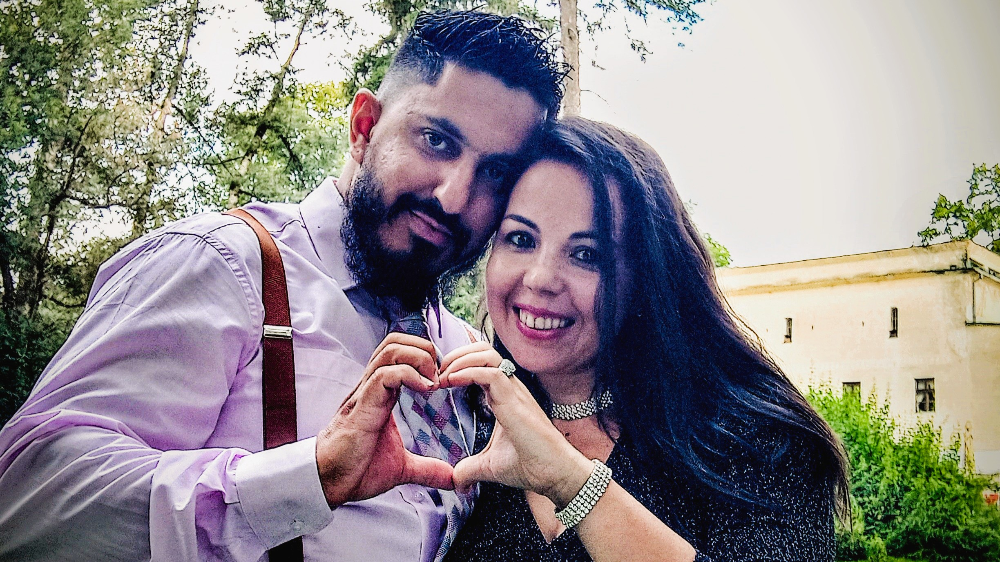

A Nossa História
A nossa história começou de uma forma simples e especial, no parque da zona ribeirinha de Ponte de Sor. Enquanto os nossos filhos brincavam juntos, tivemos a oportunidade de nos conhecer.
Trocámos contactos, começámos a conversar e, pouco a pouco, as mensagens deram lugar a longas caminhadas e momentos de partilha.
O que começou como uma amizade sincera transformou-se naturalmente em amor. Foram os nossos filhos que nos aproximaram, mas acreditamos que foi Deus quem permitiu que esta união florescesse e permanecesse firme ao longo dos anos.
Somos diferentes, com personalidades distintas. Ela é calma e serena; eu sou mais impulsivo e stressado. Mas são precisamente essas diferenças que nos completam e tornam a nossa caminhada tão especial.
Deus tem sido a base da nossa relação, a força da nossa família e o alicerce que nos mantém unidos. Jesus é o centro da nossa casa, dos nossos sonhos e de tudo aquilo que construímos juntos.
